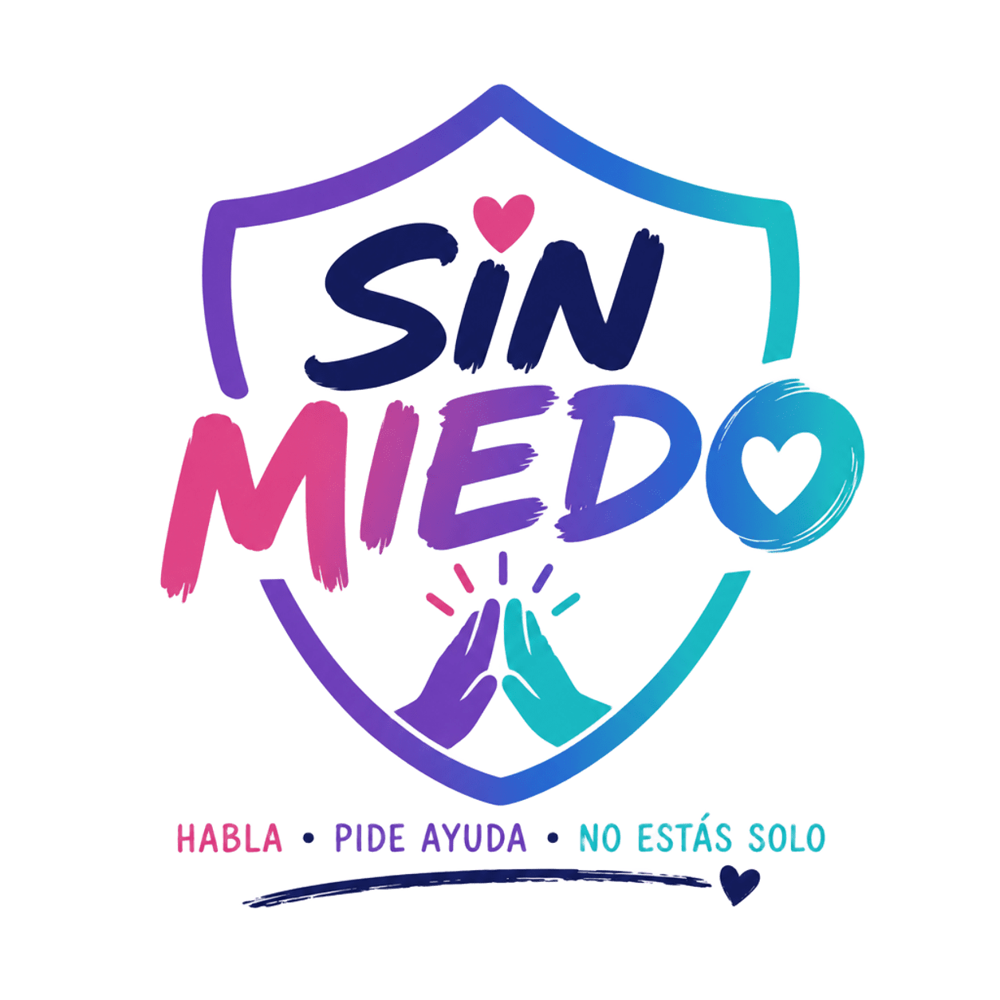

~/proyectos/sin-miedo
Sin Miedo
Los centros educativos necesitan canales seguros y anónimos para detectar y frenar el acoso escolar a tiempo. Sin Miedo es una plataforma construida con Laravel que permite a los estudiantes denunciar de forma anónima y acceder a un cuestionario de detección de acoso, todo gestionado desde un panel con roles y permisos. Desarrollada en colaboración con Gondo Psicología.
- Diario privado cifrado para el alumnado
- Panel de administración con roles y permisos